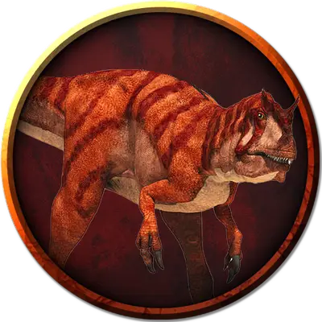

Аниматронный аллозавр
Animatronic Allosaurus
Большой Конструкт, без мировоззрения

Класс Доспеха 13 (природный доспех)
Хиты 51 (6к10 + 18)
Скорость 60 футов
| мод | спас | ||
|---|---|---|---|
| СИЛ | 19 | +4 | +4 |
| ЛОВ | 13 | +1 | +1 |
| ТЕЛ | 17 | +3 | +3 |
| мод | спас | ||
|---|---|---|---|
| ИНТ | 2 | −4 | −4 |
| МДР | 12 | +1 | +1 |
| ХАР | 5 | −3 | −3 |
Навыки Восприятие +5
Иммунитет к урону психическая энергия, яд
Иммунитет к состояниям испуг, отравление, очарование, паралич
Чувства пассивное Восприятие 15
Опасность 2 (450 опыта)
Бонус мастерства +2
Особенности
Бросок. Если аниматронный аллозавр перемещается по крайней мере на 30 футов по прямой к существу, а затем атакует Когтями в этом же ходу, эта цель должна преуспеть в спасброске Силы Сл 13, иначе будет сбита с ног. Если цель лежит, аниматронный аллозавр может совершить против нее одну атаку Укусом бонусным действием.
Действия
Укус. . Рукопашная атака оружием: +6 к попаданию, досягаемость 5 фт., одна цель. Попадание: 15 (2к10 + 4) колющего урона.
Коготь. . Рукопашная атака оружием: +6 к попаданию, досягаемость 5 фт., одна цель. Попадание: 8 (1к8 + 4) рубящего урона.
Описание
Аллозавр — хищник, обладающий громадным размером, силой и скоростью. Он может догнать и повалить почти любую добычу на открытой местности, вцепивших в жертву своими опасными когтями.